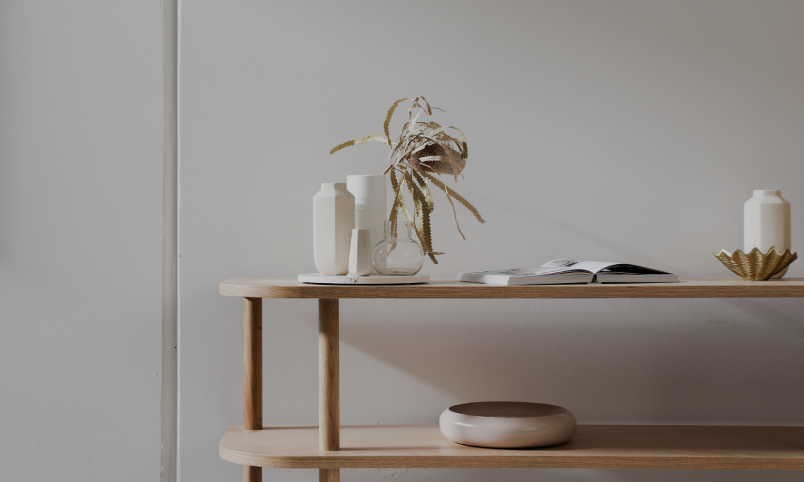
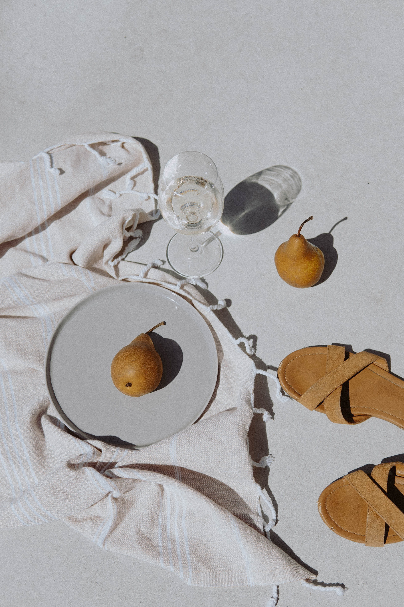
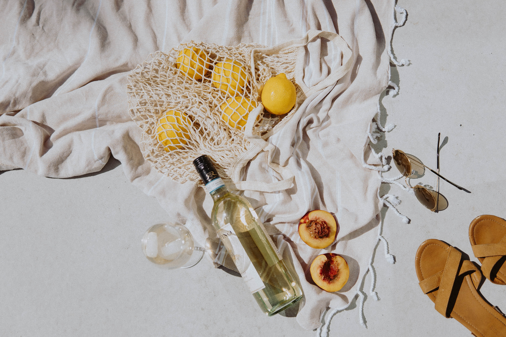
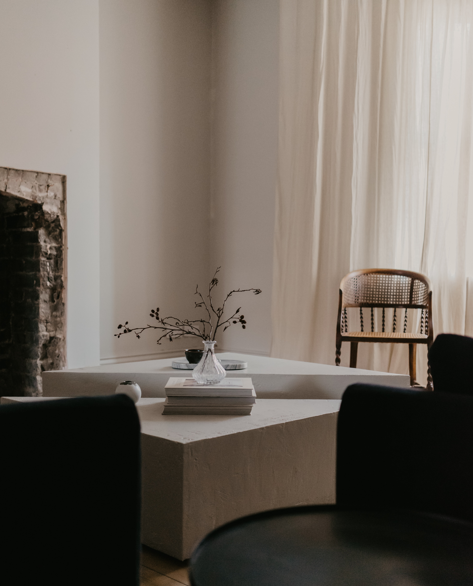
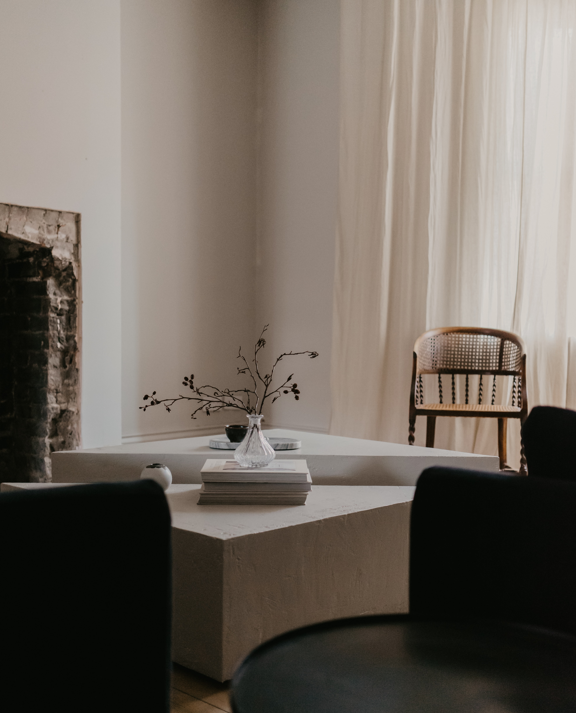
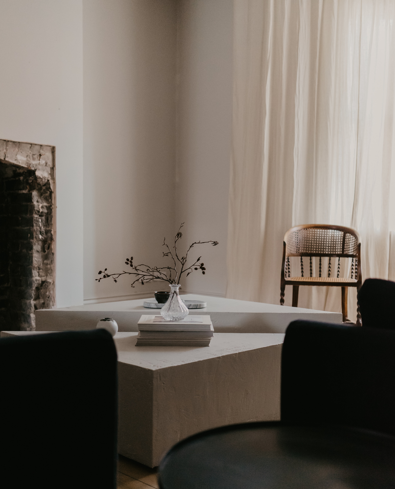
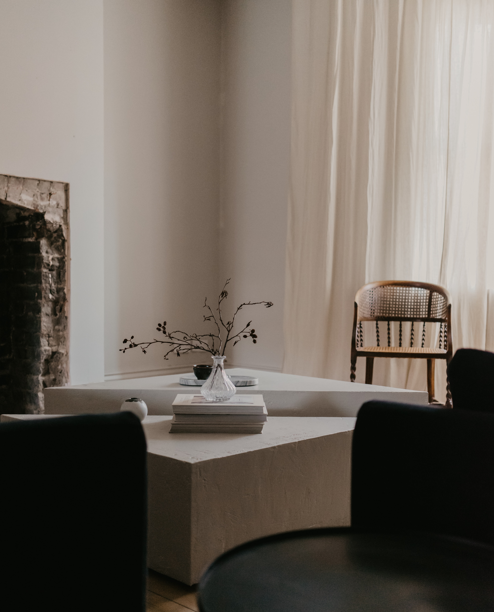

 


75
DESIGNER PORTFOLIO.

DESIGNER PORTFOLIO.
Yoshikawa Nanako(22)
Wikipedia巡り・かわいい照明探し
徳島県出身。デザイン科の高校で、主にパッケージデザインについて学ぶ。短期大学卒業後、IT企業にインハウスデザイナーとして就職。主にUI・UX、その他にもWeb、DTP等デザインの全てを担当。退職後は企業のロゴ製作などを行う。主な使用ソフトはXD/Sketch/Illustrator/Photoshop。
お店でもらえちゃうアプリ、「otonari」の全デザインの担当をしていた際の制作物です。老若男女を対象としたアプリのため、多様性を感じられるようにピンク〜ブルーのグラデーションを採用しました。トップサイトの作成時には、「20〜50代ほどの女性」にターゲットを絞り可愛らしく愛着の沸くようなデザインを心がけて制作を行いました。
お店でもらえちゃうアプリ、「otonari」の全デザインの担当をしていた際の制作物です。店舗に設置していただく予定のポスターのため、あまり色数は増やさずに店内に馴染みやすいようなシンプルなデザインを意識しています。
私の名刺デザインです。自分のトレードカラーを白と黒と決めているため、その2色のみで構成しました。よく人に丸いと言われるのが個人的に気に入っており、印象付けのために円形をいくつか組み合わせ使用しました｡背面の「75」は、私自身の名前を数字化したものです。ラッキーナンバーとして大切にしている数字です。自分らしさをたっぷり詰め込んだ名刺です。

東武東上線や東武百貨店のポイントカード､「トブポ」のロゴデザインをイメージして作成しました。ペルソナを「幅広い年齢層の女性」に絞り､豚さんの鼻だけのロゴにすることで､百貨店の上品なイメージを保ちつつ、シンプルでありつつ女性受けするようなデザインに仕上げました。東武百貨店限定のスイーツなどを制作する際などにパッケージに入れてもらっても可愛いデザインかと思います。